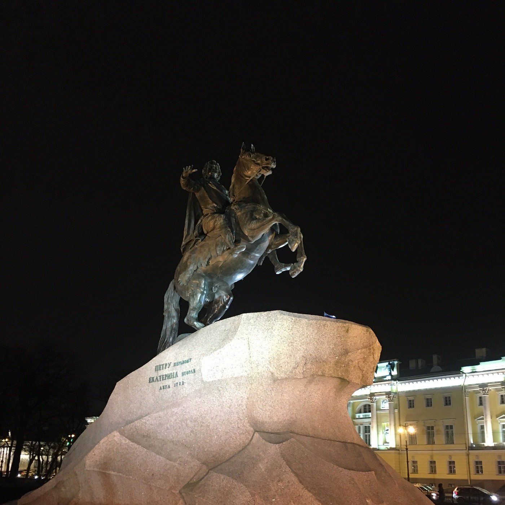
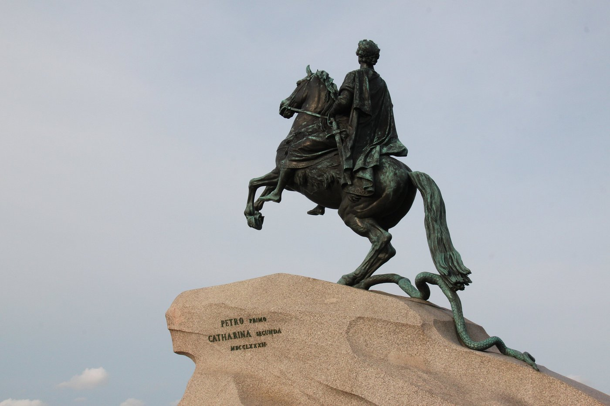
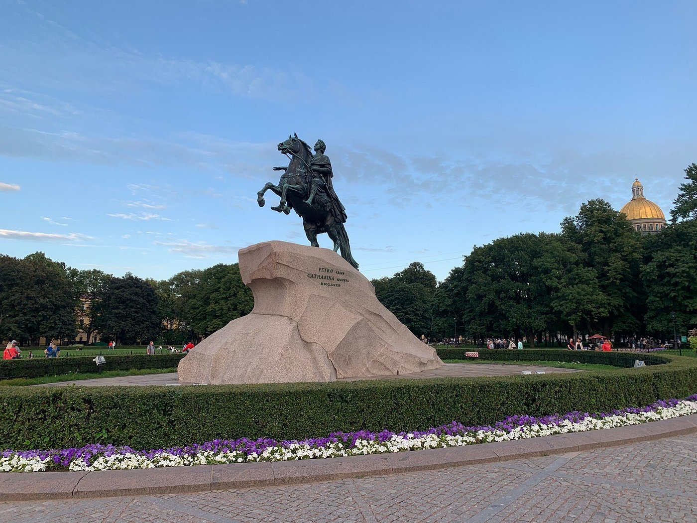
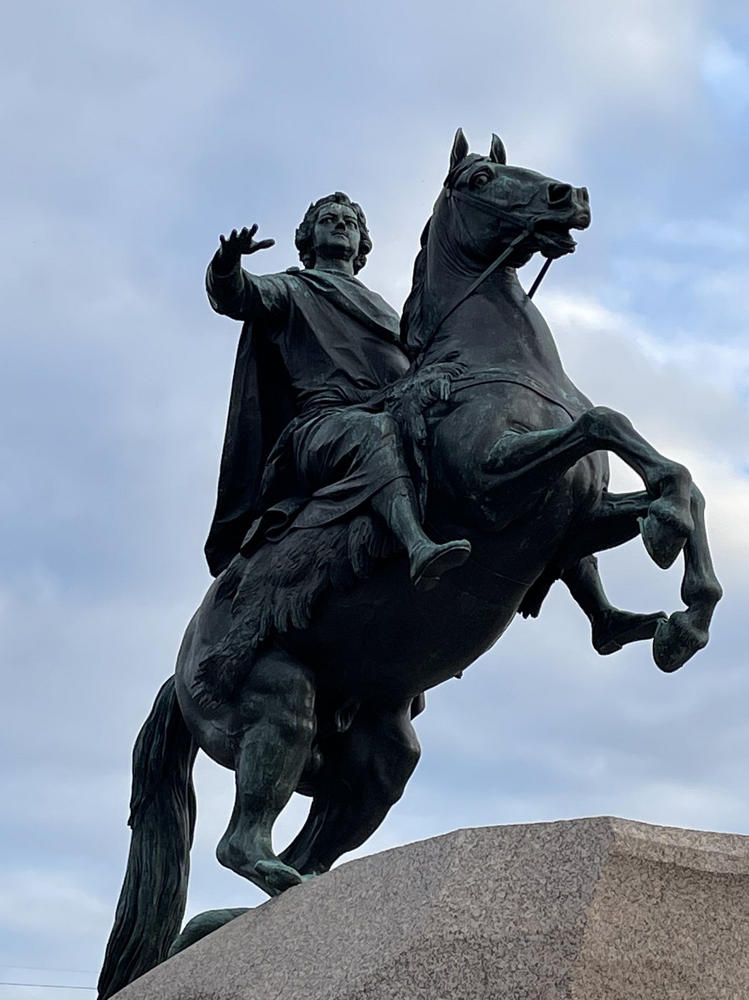

Памятник Петру I «Медный всадник»

Легенда
Существует пророчество, согласно которому Санкт-Петербург будет стоять до тех пор, пока «Медный всадник» находится на своем месте. Ожившая статуя — один из главных архетипов петербургской мифологии.

Самый известный миф связан с Павлом I: задолго до установки памятника будущему императору во время ночной прогулки явился призрак Петра, который произнес: «Павел, прощай, но знай, что я принимаю в тебе участие».

Также говорят, что конь Петра попирает змею не только как символ победы, но и как символ зла, которое пытается выбраться из-под земли города.
Что было на самом деле
Памятник открыт в 1782 году по заказу Екатерины II. Скульптор — Этьен Фальконе. Вопреки названию, памятник изготовлен из бронзы. «Гром-камень», ставший подножием, весил около 1500 тонн и был доставлен из поселка Лахта.

Во время Отечественной войны 1812 года, когда возникла угроза оккупации, Александр I приказал вывезти памятник, но, по легенде, майор Батурин пересказал царю свой сон, где Петр говорит: «Пока я на месте, моему городу нечего бояться». Памятник оставили, и нога неприятеля действительно не ступила в Петербург.
← Назад к карте